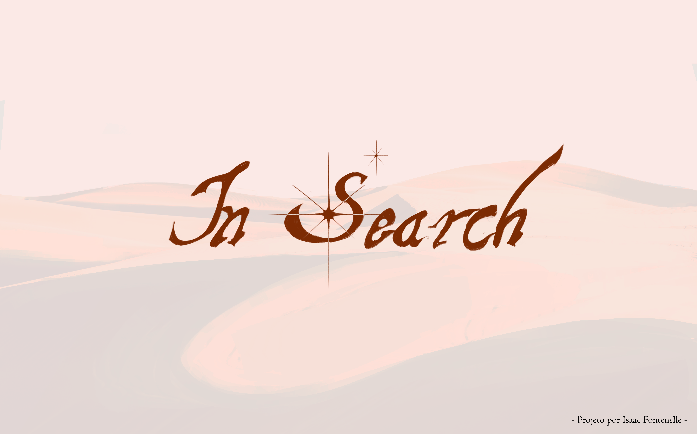
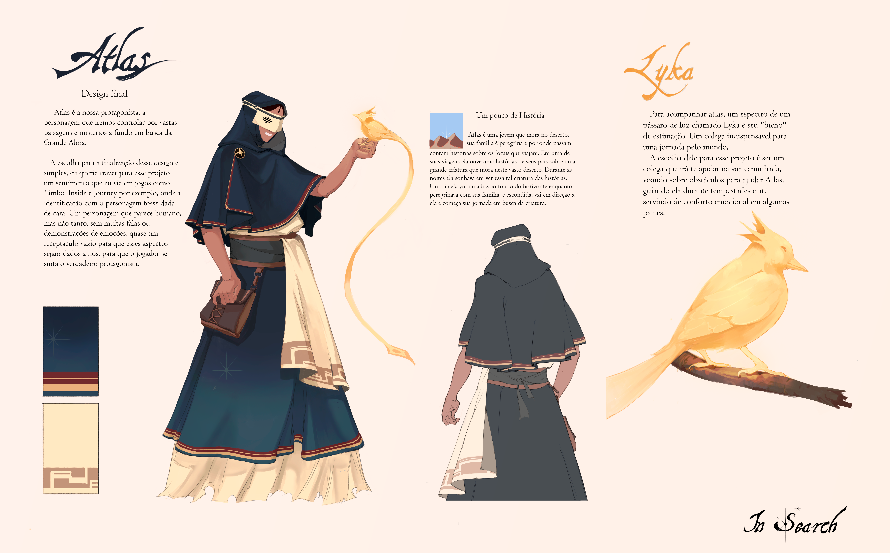
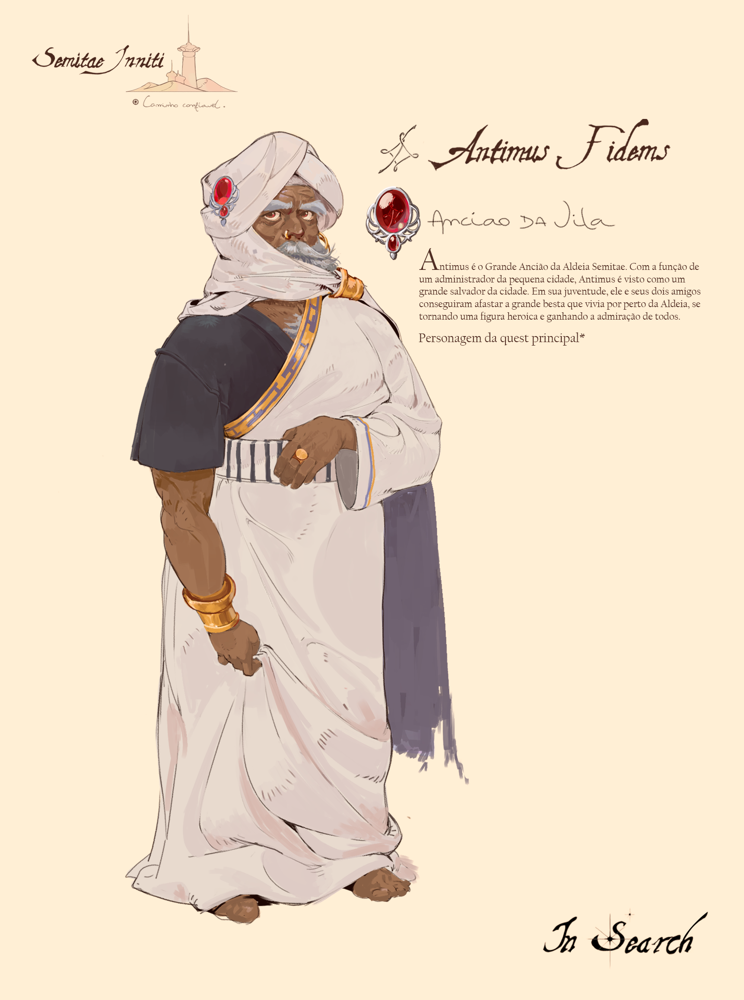
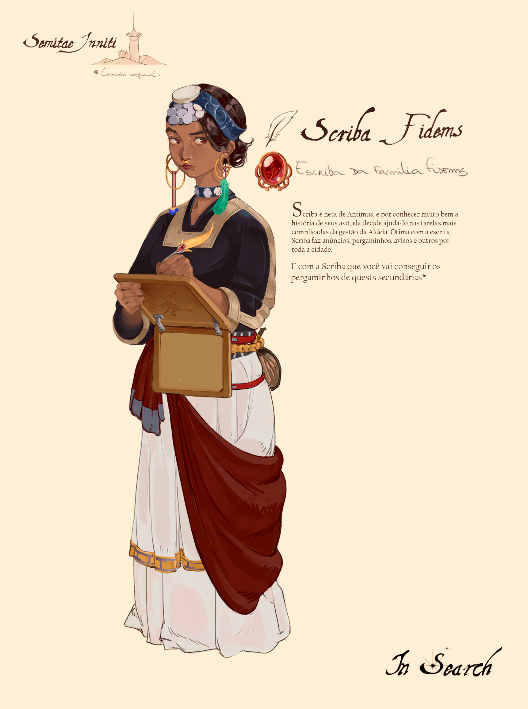
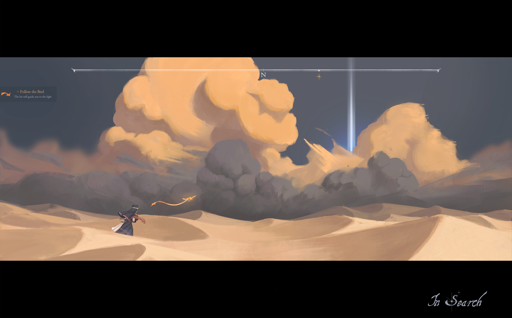
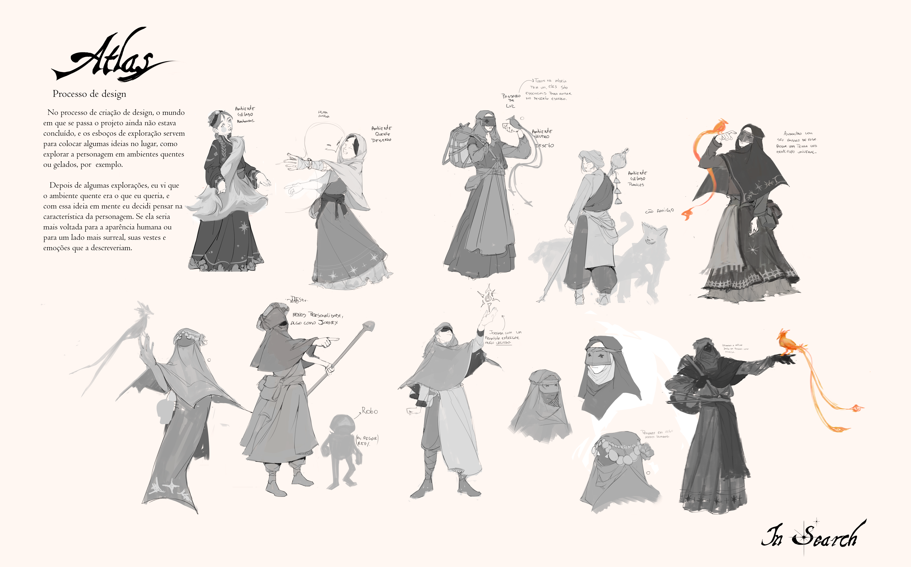
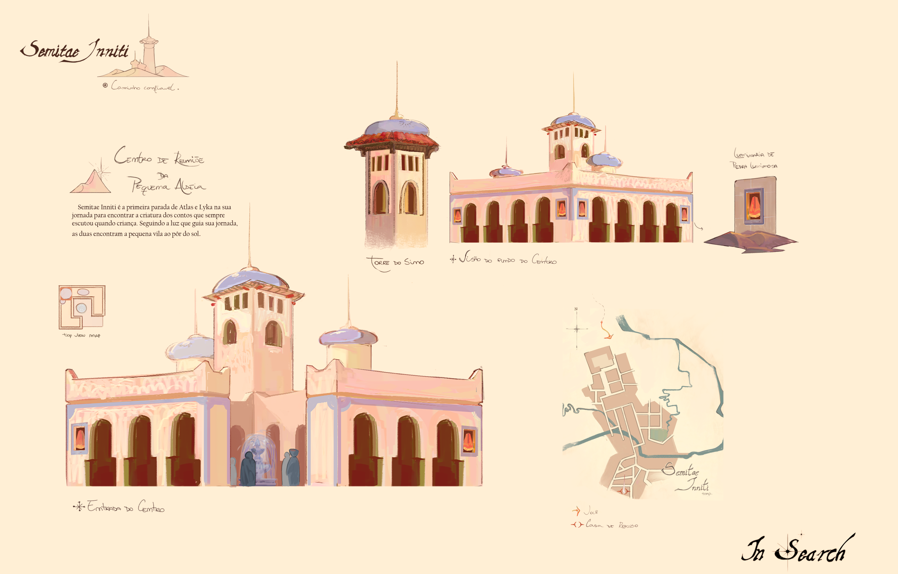
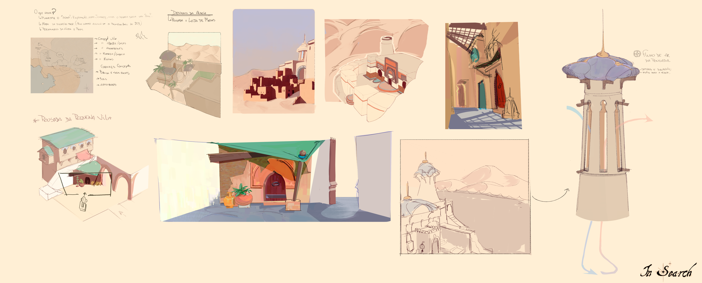
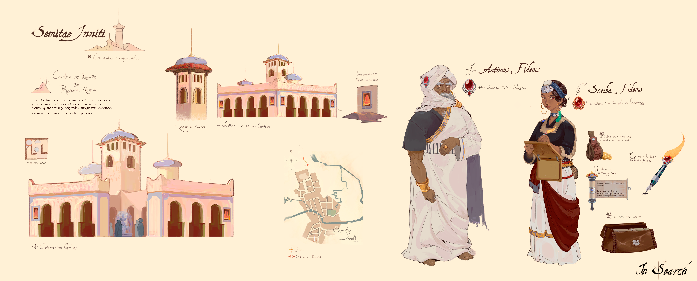
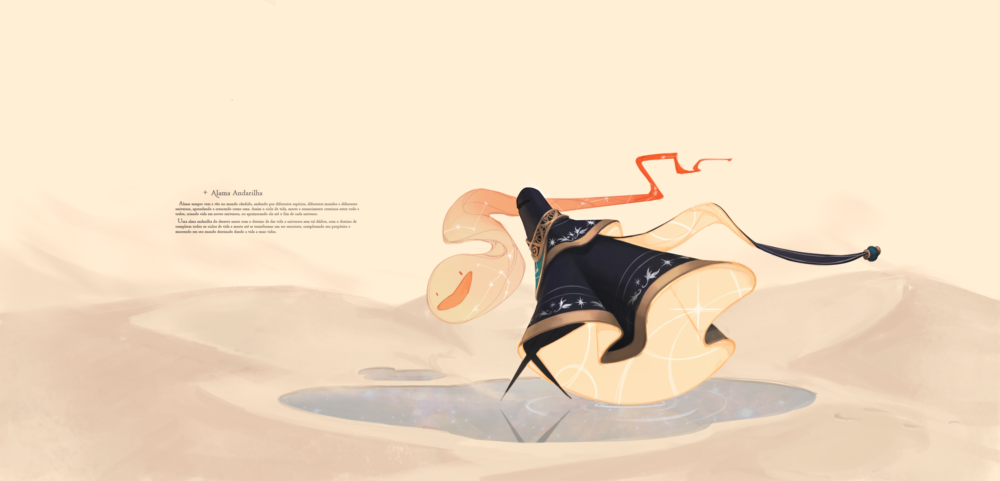

PERSONAL PROJECT
In Search is my capstone project, set in an endless desert heavily inspired by the world of Journey. Atlas, the protagonist, and Lyka, her companion — a spirit bird made of light — cross this landscape in search of the light on the horizon: a story they've both heard since childhood and now want to see with their own eyes. Atlas's design was deliberately kept restrained, almost without expression or dialogue, so the player could project their own journey onto her — the same quiet identification I've always loved in games like Journey, Inside, and Limbo. This project was my way of practicing worldbuilding and environment composition, building a world that speaks more through landscape than through dialogue.